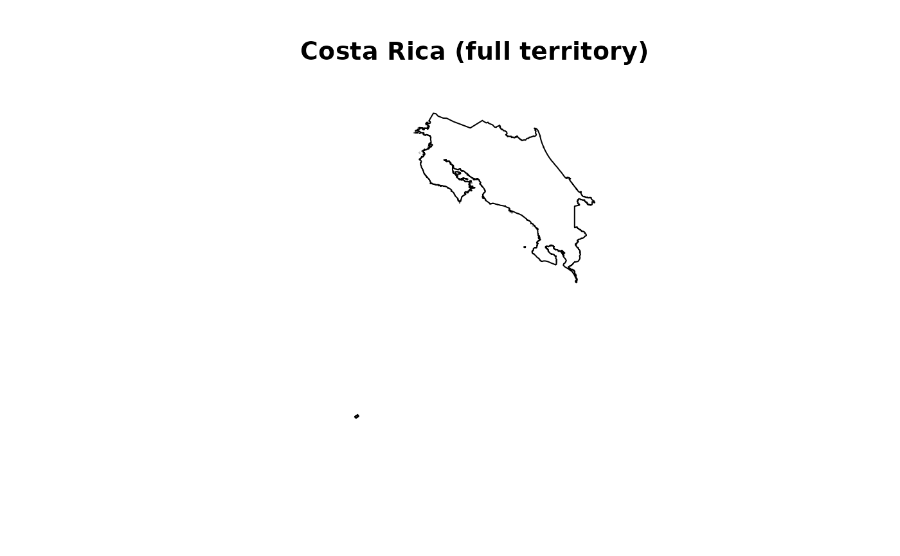

An sf multipolygon containing the full outline of Costa Rica,
derived from GADM 4.1. Includes the continental landmass, the Isla del
Coco (~550 km offshore in the Pacific Ocean), and all other minor
oceanic islands.
For the continental outline only (without islands), see
cr_outline_c.
Format
An sf object with 1 feature and 1 column:
- geometry
MULTIPOLYGON in WGS 84 (EPSG:4326) representing the full national territory of Costa Rica including all islands.
Source
Global Administrative Areas (GADM) version 4.1.
Downloaded via geodata::gadm("CRI", level = 0).
https://gadm.org
Details
## When to use this vs cr_outline_c
Use cr_outline when your analysis requires the full national
territory (e.g., legal/administrative boundaries, marine protected areas,
or studies specifically involving the Isla del Coco). Use
cr_outline_c for mainland ecological analyses where oceanic
islands would distort results (species distribution models, landscape
metrics, climate extraction).
## Reproducibility
Generated with data-raw/cr_outline.R. To regenerate:
source("data-raw/cr_outline.R")See also
cr_outline_c— continental outline only (no islands).get_cr_outline— programmatic version with options.get_h3_grid— generate H3 hexagonal grid over this AOI.
Examples
data(cr_outline)
plot(sf::st_geometry(cr_outline), main = "Costa Rica (full territory)")

if (FALSE) { # \dontrun{
# Compare continental vs full
par(mfrow = c(1, 2))
plot(sf::st_geometry(cr_outline_c), main = "Continental")
plot(sf::st_geometry(cr_outline), main = "Full territory")
} # }